ORIGEN
Se dice que el Overworld fue creado cuando un Creeper ancestral explotó con tal potencia que formó
montañas, mares y valles.
Algunos sostienen que la luna cuadrada es en realidad el fragmento que quedó
de la explosión original.


FAUNA
En el Overworld, la fauna es variada y se puede encontrar tanto en los biomas más comunes como en los más remotos. Algunos de los animales más representativos son:
Haga click aqui para ver la lista de animales
-

Vacas
Las vacas son animales pacíficos que proporcionan leche, carne y cuero.
Se encuentran comúnmente en las llanuras y las zonas de pasto. -

Cerdos
Los cerdos se pueden encontrar en bosques y llanurascuando se matan, dejan carne de cerdo pero no es Ibérica.
Al ser domesticados, pueden ser montados usando una zanahoria sobre un palo. -


Ovejas
Las ovejas se encuentran en diversas áreas y pueden ser esquiladas (pasar raton por encima de la foto) dando lana que puede ser usada para crear camas y otros objetos
-

Pollos
Los pollos son pequeños animales que dejan huevos y carne. Son comunes en bosques y campos. -

Caballos
Los caballos son veloces y pueden ser domesticados para ser montados. Se encuentran en las llanuras y biomas de sabana. -

Lobos
Los lobos pueden ser domesticados con huesos y luego te seguirán. Son buenos compañeros para protegerte de los enemigos -

Gatos
Los gatos, que pueden ser domesticados con pescado, ayudan a ahuyentar a los creepers.
Se encuentran en aldeas o en ciertos biomas. -

Ranas
Las ranas fueron descubiertas recientemente.
Se encuentran en biomas húmedos como los pantanos y se alimentan de pequeños insectos como las moscas
HABITANTES AUTÓCTONOS
Los aldeanos se comunican a través de "Hmmms" en diferentes tonos.
Su cultura se basa en intercambiar esmeraldas por cosas absurdamente inútiles, excepto por el bibliotecario, quien es el único con habilidades mágicas para darte libros encantados.
También existen distintas culturas dependiendo del bioma y esto hace que sus vestimentas sean distintas:
 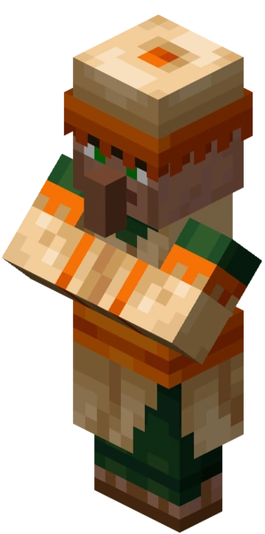
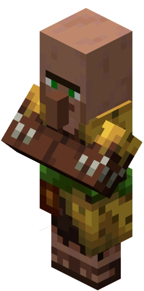
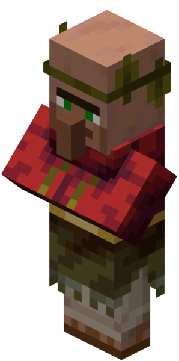
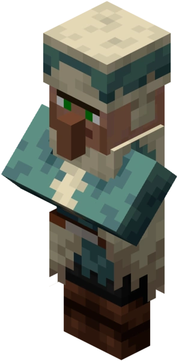
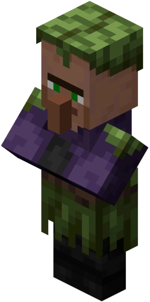
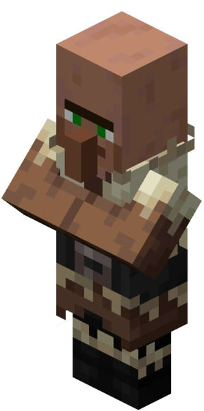
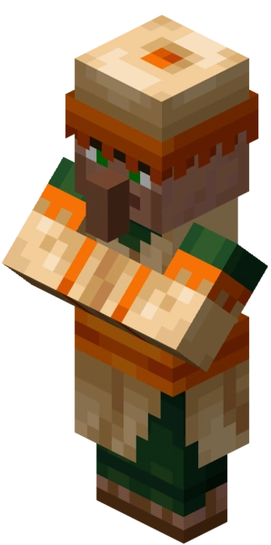
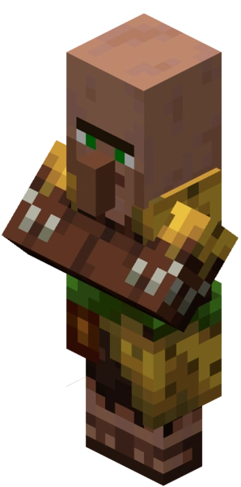
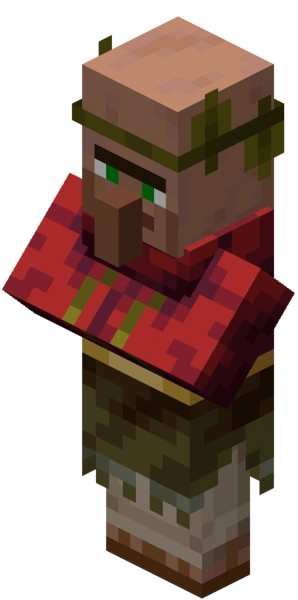
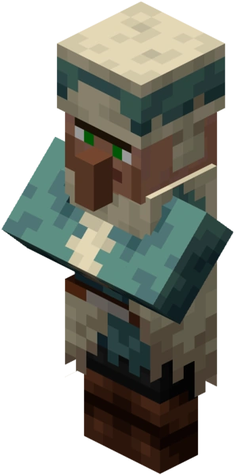
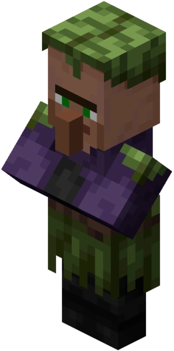
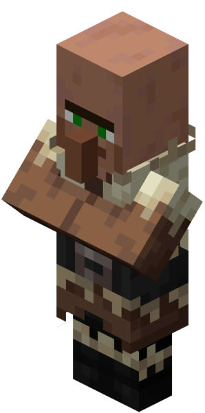